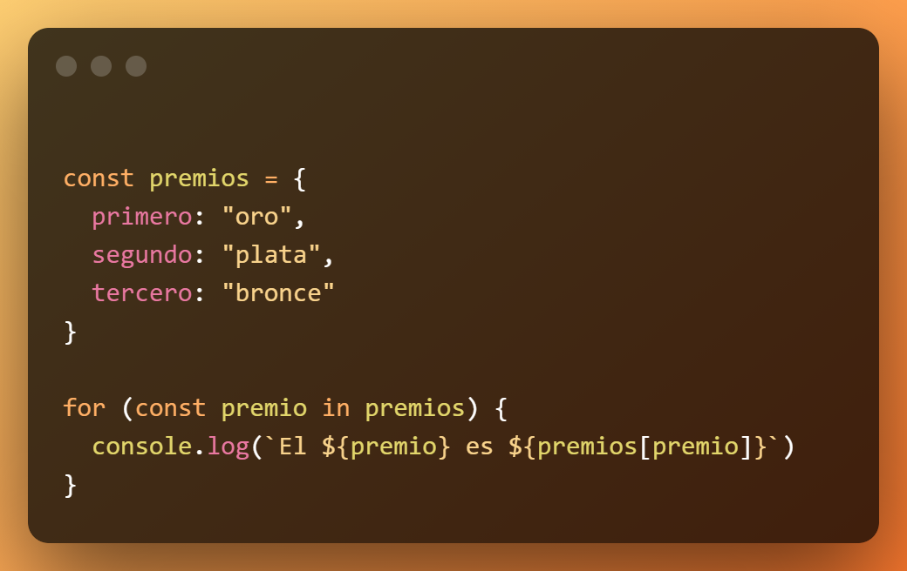

Bucles en JavaScript
Los bucles son estructuras que permiten repetir un bloque de código varias veces. En JavaScript, los más comunes son for, while y do...while.

Bucle for
Se utiliza cuando conocemos de antemano el número de repeticiones. Se compone de tres partes: inicialización, condición y actualización.
for (let i = 0; i < 5; i++) {
console.log(i);
}Bucle while y do...while
while: Ejecuta el bloque de código mientras la condición sea verdadera.
do...while: Ejecuta el bloque al menos una vez y luego repite mientras la condición sea verdadera.
let i = 0;
while (i < 3) {
console.log(i);
i++;
}
let j = 0;
do {
console.log(j);
j++;
} while (j < 2);